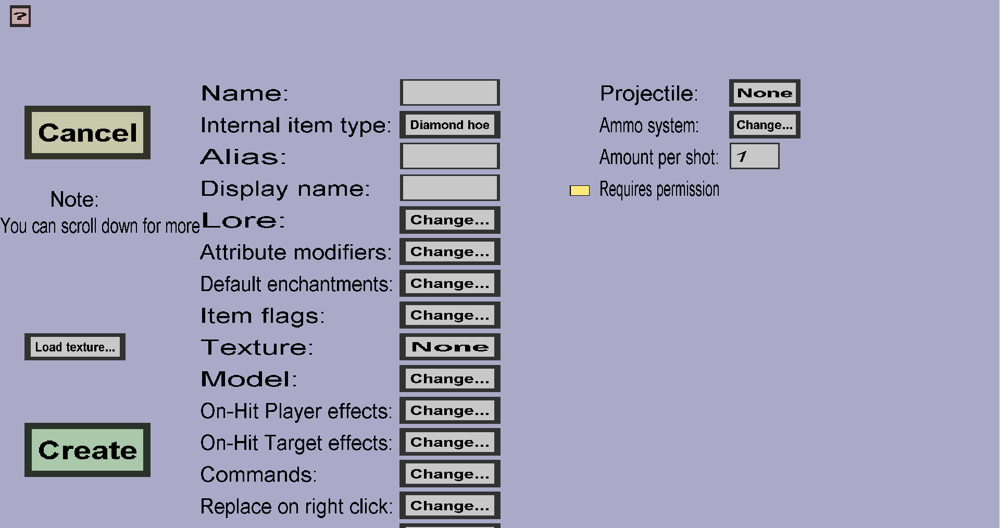

The gun edit menu can be used to create and modify gun custom items. These are custom items that fire custom projectiles and consume ammo by doing so (unlike wands, which don't use ammo). When you just started creating a new gun, the menu should look like this:
The properties on the right (Projectile, Ammo system, and Amount per shot are unique to guns. These will be explained below. All other properties in this menu are explained here.
The custom projectile that will be fired by this gun. The button on the right of Projectile: will display the name of the currently selected projectile (or None if you haven't selected one yet). Click the button to change it. Note: you need to create the custom projectile before you can create a gun that shoots it. To create a custom projectile, go back to the edit menu and click Projectiles...
The ammo system determines how the gun will consume ammo items upon shooting and whether it needs to be loaded first. Click the Change... button on the right of Ammo system: to configure it. That would take you to the gun ammo menu. (See the documentation on that page for more information.)
The Amount per shot determines how many projectiles will be fired each time a player uses this gun. If you choose a value larger than 1, multiple copies of the same projectile will be fired. Note: using a value larger than 1 will not increase the ammo usage; If you want it to consume more ammo, change the Ammo system.
Whether players need a permission to shoot projectiles with this gun. If this is unchecked, any player can shoot projectiles with this gun. If this is checked, only players with the customitems.shoot.GUN_NAME or the customitems.shootall permission can shoot projectiles with this gun.